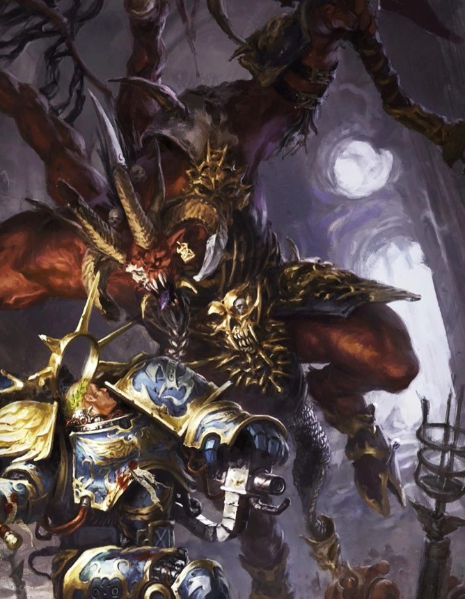
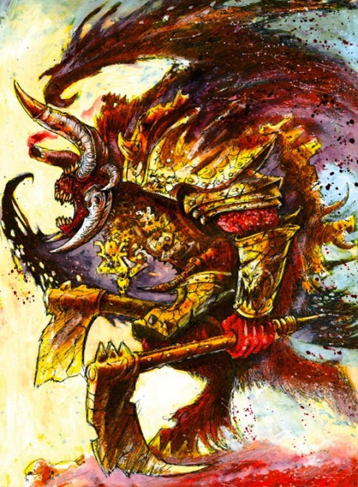

Skarbrand
| Skarbrand | |
|---|---|
| The Exiled One | |
 Skarbrand over Roboute Guilliman in the heart of the Blackstone Fortress, 999.M41 Artwork © Games Workshop | |
| General of the Blood God's legions | |
| Tenure | Before recorded history – his exile[a] |
| Successor | None recorded |
| Type | Bloodthirster, a Greater Daemon of Khorne |
| Status | Active; banished by Guilliman in 999.M41 and since returned |
| Allegiance | Khorne, though cast out of his realm |
| Enemies | Tzeentch; Roboute Guilliman; Commander Dante |
| Wargear | The daemon axes Slaughter and Carnage |
| Known for | Striking at Khorne; the fall of Biel-Tan (999.M41); the battle with Guilliman (999.M41) |
Skarbrand, the Exiled One, is a Bloodthirster, a Greater Daemon of Khorne. He was once the greatest of the Blood God's generals and the leader of his daemon legions. Goaded by Tzeentch, he struck at Khorne himself, and Khorne cast him out of his realm for ever. Since then Skarbrand has become rage without thought, a daemon whose presence drives every living thing near him to slaughter. He continues to kill in Khorne's name, but the god has never taken him back.[1]
Skarbrand has appeared in realspace many times in the 41st millennium. He was banished by Commander Dante of the Blood Angels, helped bring about the fall of the Aeldari craftworld Biel-Tan in 999.M41, and in the same year fought the newly revived primarch Roboute Guilliman in a Blackstone Fortress in the Maelstrom, where he was defeated. Since the opening of the Great Rift he has been a commander of the Khornate Blood Crusade.[1][2]
History
[edit]The greatest of the Bloodthirsters
[edit]The Ordo Malleus's records of Skarbrand's early existence come from the Warp itself and cannot be dated. They tell that no daemon shed more blood for Khorne. He destroyed the First Palace of Slaanesh and killed the great Poxviathan of Nurgle. At the Battle of the Infernus Plains he defeated the mightiest of his rival Bloodthirsters and bound the souls of the two strongest into a pair of axes, Slaughter and Carnage. Khorne, who cares only that blood flows, was pleased, and made Skarbrand the leader of his legions.[1]
The fall
[edit]Tzeentch saw the Bloodthirster's pride and fed it with whispers, changing the threads of his fate and driving him to ever greater acts of slaughter until his rage burned out of control. At last Skarbrand struck at Khorne while the god's attention was elsewhere. The blow, which could have destroyed an army, made only a small mark on the god's armour. Khorne seized Skarbrand by the throat and choked him until nothing was left of his mind but the rage that had struck the blow. He carried him to the top of the Brass Citadel, held him up before the whole realm, and threw him out.[1]
Skarbrand burned across the realms of the Chaos Gods for eight days and nights before he struck the ground. The impact carved a canyon and tore his wings to rags. Since then his wings have been chained shut, his face torn and his horns cracked, and the wounds have never healed.[1]
Appearances in the 41st millennium
[edit]
In the early 41st millennium Skarbrand appeared on the agri-world of Gheistos during the Gheistos Cataclysm, and attacked the Vorpal Swords Chapter as it tried to relieve the besieged governor's fortress. In 975.M41 he appeared on the Cadian-held fortress world of Lutoris Epsilon, where his rage drove the defenders of the Astra Militarum to kill one another. Later in M41 he met Commander Dante of the Blood Angels in single combat at the Gates of Pandemonium, and Dante cut him in two and banished him.[1][b]
In 999.M41 the daemon Masque of Slaanesh lured Skarbrand into pursuing her. She led him to the corrupted Aeldari maiden world of Ursulia and then on board the craftworld Biel-Tan, where his rage helped tear the craftworld apart. The fall of Biel-Tan was one of the events that led to the rise of the Ynnari.[1][2]
The battle with Guilliman
[edit]In the same year, during the Terran Crusade, Kairos Fateweaver captured Roboute Guilliman in the Maelstrom and held him prisoner in a Blackstone Fortress garrisoned by the Red Corsairs. Skarbrand and his daemons rejected the Lord of Change's plan to keep the primarch alive. They crashed into the fortress to take Guilliman's skull for Khorne, Skarbrand himself falling on it like a blazing comet with a Khornate fleet behind him.[2]
In the confusion the primarch was freed by the Fallen Angel Cypher and the Harlequin Shadowseer Sylandri Veilwalker. Skarbrand found them as they fled. The Black Templars Emperor's Champion Marius Amalrich fought him alone and was killed, but his Black Sword wounded the daemon deeply. Guilliman then fought Skarbrand in single combat and threw him from the platform, his body torn apart. The Grey Knights hold that a Greater Daemon of his rank cannot be destroyed outside the Warp and record him as banished.[2][3]
Era Indomitus
[edit]Since the opening of the Great Rift in 999.M41 Skarbrand has moved erratically across the galaxy, and Warp storms rise around him wherever he appears. In the early Era Indomitus he has been reported as one of the daemon commanders of the Khornate Blood Crusade.[2]
Powers and wargear
[edit]Skarbrand's mind is gone; only rage is left. Every living thing near him, friend or foe, is filled with the urge to kill. He cannot fly, but his strength is as great as that of any Bloodthirster. He fights with the axes Slaughter and Carnage, in each of which a Greater Daemon of Khorne is bound. Eyes look out from their blades, and the metal has been warped by the daemons within.[1]
Timeline
[edit]| Date | Event |
|---|---|
| Before recorded history | Battle of the Infernus Plains; Slaughter and Carnage forged; leads Khorne's legions |
| Before recorded history | Strikes at Khorne and is exiled[a] |
| Early M41 | The Gheistos Cataclysm (estimated) |
| 975.M41 | Lutoris Epsilon |
| Late M41 | Banished by Dante at the Gates of Pandemonium (estimated) |
| 999.M41 | Fall of Biel-Tan |
| 999.M41 | Defeated by Guilliman in the Blackstone Fortress |
| Early M42 | Commander of the Blood Crusade |
See also
[edit]Notes
[edit]- ^ a b The Ordo Malleus has no date for Skarbrand's exile. It is placed in the remote past, before the earliest Imperial records of his appearances in realspace.
- ^ The Gheistos Cataclysm is dated only to the early M41, and Dante's victory at the Gates of Pandemonium only to the late M41. Both are estimates.
References
[edit]- ^ a b c d e f g h Codex: Chaos Daemons (8th Edition), pp. 35, 86. Games Workshop. Warhammer 40,000: Rulebook (8th Edition), pg. 167. Games Workshop.
- ^ a b c d e Gathering Storm - Part II - Fracture of Biel-Tan (7th Edition), pp. 22-35. Games Workshop. Gathering Storm - Part III - Rise of the Primarch (7th Edition), pp. 66-70. Games Workshop.
- ^ Codex: Chaos Daemons (6th Edition), pg. 35. Games Workshop. Warhammer 40,000: Rulebook (6th Edition), pg. 175. Games Workshop.